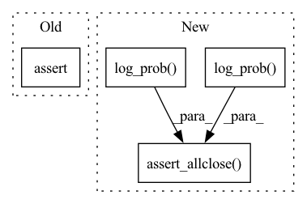

Pattern ID :32009

Before Change
tg, tg2 = torch.distributions.Geometric(prob),torch.distributions.Geometric(prob2)
assert np.allclose(jg.entropy().data,tg.entropy().numpy())
x = np.random.randint(1,10)
assert np.allclose(jg.log_prob(x),tg.log_prob(torch.tensor(x)))
// print(jd.kl_divergence(jg,jg2),torch.distributions.kl_divergence(tg,tg2))
assert np.allclose(jd.kl_divergence(jg,jg2),torch.distributions.kl_divergence(tg,tg2))
After Change
tg, tg2 = torch.distributions.Geometric(prob),torch.distributions.Geometric(prob2)
np.testing.assert_allclose(jg.entropy().data,tg.entropy().numpy(), atol=1e-4)
x = np.random.randint(1,10)
np.testing.assert_allclose(jg.log_prob(x),tg.log_prob(torch.tensor(x)), atol=1e-4)
// print(jd.kl_divergence(jg,jg2),torch.distributions.kl_divergence(tg,tg2))
np.testing.assert_allclose(jd.kl_divergence(jg,jg2),torch.distributions.kl_divergence(tg,tg2), atol=1e-4)
if __name__ == "__main__":
In pattern: SUPERPATTERN
Frequency: 3
Non-data size: 4
Instances
Fragment ID: 93513538
Project Name: jittor/jittor
Commit Name: 4ec2bfacb22034e3b3cddbd1d73e3b9c45accecb
Time: 2021-06-17
Author: randonlang@gmail.com
File Name: python/jittor/test/test_distributions.py
M Class Name: TestOneHot
N Class Name: TestOneHot
M Method Name: test_geometric(1)
N Method Name: test_geometric(1)
M Parent Class: unittest.TestCase
N Parent Class: unittest.TestCase
M File Name: python/jittor/test/test_distributions.py
N File Name: python/jittor/test/test_distributions.py
M Start Line: 101
M End Line: 105
N Start Line: 139
N End Line: 143
'>
Before Change
for _ in range(4):
nx = np.random.randint(0,9)
x[_,nx] = 1
assert np.allclose(jc.log_prob(jt.array(x)),tc.log_prob(torch.tensor(x)))
assert np.allclose(jd.kl_divergence(jc,jc2),torch.distributions.kl_divergence(tc,tc2))
def test_cate(self):
After Change
for _ in range(4):
nx = np.random.randint(0,9)
x[_,nx] = 1
np.testing.assert_allclose(jc.log_prob(jt.array(x)),tc.log_prob(torch.tensor(x)), atol=1e-5)
assert np.allclose(jd.kl_divergence(jc,jc2),torch.distributions.kl_divergence(tc,tc2))
def test_cate(self):
a = jd.Categorical(jt.array([0.25, 0.25, 0.25, 0.25]))
'>
Fragment ID: 93513542
Project Name: jittor/jittor
Commit Name: 4ec2bfacb22034e3b3cddbd1d73e3b9c45accecb
Time: 2021-06-17
Author: randonlang@gmail.com
File Name: python/jittor/test/test_distributions.py
M Class Name: TestOneHot
N Class Name: TestOneHot
M Method Name: test_one_hot(1)
N Method Name: test_one_hot(1)
M Parent Class: unittest.TestCase
N Parent Class: unittest.TestCase
M File Name: python/jittor/test/test_distributions.py
N File Name: python/jittor/test/test_distributions.py
M Start Line: 34
M End Line: 41
N Start Line: 34
N End Line: 41
'>
Before Change
tn = torch.distributions.Normal(mu,sigma)
assert np.allclose(jn.entropy().data,tn.entropy().numpy())
x = np.random.uniform(-1,1)
assert np.allclose(jn.log_prob(x),tn.log_prob(torch.tensor(x)))
mu2 = np.random.uniform(-1,1)
sigma2 = np.random.uniform(0,2)
jn2 = jd.Normal(mu2,sigma2)
After Change
tn = torch.distributions.Normal(mu,sigma)
assert np.allclose(jn.entropy().data,tn.entropy().numpy())
x = np.random.uniform(-1,1)
np.testing.assert_allclose(jn.log_prob(x),tn.log_prob(torch.tensor(x)))
mu2 = np.random.uniform(-1,1)
sigma2 = np.random.uniform(0,2)
jn2 = jd.Normal(mu2,sigma2)
tn2 = torch.distributions.Normal(mu2,sigma2)
'>
Fragment ID: 93513535
Project Name: jittor/jittor
Commit Name: 740b9c8552c4533910b58dcb38d88cafba86d530
Time: 2021-09-28
Author: randonlang@gmail.com
File Name: python/jittor/test/test_distributions.py
M Class Name: TestOneHot
N Class Name: TestOneHot
M Method Name: test_normal(1)
N Method Name: test_normal(1)
M Parent Class: unittest.TestCase
N Parent Class: unittest.TestCase
M File Name: python/jittor/test/test_distributions.py
N File Name: python/jittor/test/test_distributions.py
M Start Line: 72
M End Line: 72
N Start Line: 72
N End Line: 72